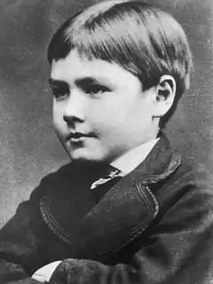
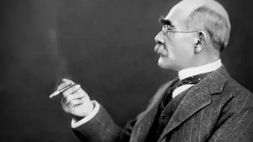
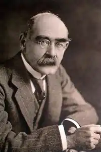

РЕДЬЯРД КІПЛІНГ
(1865-1936)
Англійський поет і прозаїк, лауреат Нобелівської премії (1907), Редьярд Кіплінг народився в Індії, в Бомбеї, де його батько, скульптор і декоратор, викладав у художній школі. У 1875 році Джон Локвуд Кіплінг став директором школи й куратором музею індійського мистецтва. Він мав потяг до красного письменства, випустив книгу "Чоловік і звір в Індії". Кіплінг належав до вузького кола колоніальної еліти й здобув у Індії визнання. Більшу частину дитинства й отроцтва Редьярд провів поза стінами батьківського будинку. Шести років його з сестрою було відправлено до Англії на виховання до далекої родички. Умови були нестерпними, замість обожнювання і ласки, яку отримували діти вдома від няньки-туземки, їх залякували й били. Мати, котра навідала дітей, побачила, що від нервових потрясінь хлопчик майже осліп. Вона забрала дітей до Індії. Але незабаром Редьярд знову їде до Англії, його помістили в коледж Вествард-Хо. Тут панував дух насильства й муштри, та підліток повірив у необхідність і користь уроків покори, він визнавав систему жорстокого виховання. Кіплінгу ще не було й 17 років, коли він залишив Вествард-Хо не довчившись. Батько добився для нього місця редактора в газеті. Редьярд рано відчув письменницьке покликання; "Шкільна лірика (1881) — це перша спроба пера, хоча ці вірші загалом були наслідувальні. Сім років Кіплінг присвятив журналістиці. Він багато їздив країною, бачив масову неписьменність, забобони поряд з існуючою високою духовністю. Репортерська служба розвинула в ньому спостережливість. В автобіографічній книзі "Дещо про себе" Кіплінг розповів, як він здобував матеріал. Майже всі оповідання, котрі він написав у Індії, вийшли у місцевому видавництві: "Три солдати", "Історія сімейства Гедсбі", "Червоне й біле", "Під деодорами", "Рікша-привид". Кіплінг швидко опанував мистецтво короткого оповідання і вражав авторською плідністю. Про нього спочатку заговорили в Індії, згодом у метрополії. У Лондоні його оповідання були нарозхват. У 1890 році вийшли дві нові збірки "Місто Страшної ночі", "Сватання Діни Шад". Невдовзі вийшла чимала добірка оповідань, де Кіплінг продовжує розробляти індійську тематику. Кіплінг увійшов у літературу, коли їй необхідне було оновлення. У суспільстві росла потреба у новому герої, новій ідеї. Успіх Кіплінга сприймався, як успіх улюбленця Діккенса. Він писав про звичайних людей, але показував їх, зазвичай, у екстремальних ситуаціях, у незвичних обставинах, коли проступає сутність людини, відкриваються глибини небаченої досі сили особистості. Одним з перших він відреагував на тенденцію демократизації літературної мови та поетичного стилю. Зі сторінок оповідань Кіплінга на читача ринув потік невідомого й неприкрашеного життя. Замість мальовничих описів Індії, котрі траплялися на сторінках модних авантюрних романів, читач побачив похмурі картини злиденності, дикунства, страждання. Він населив оповідання героями, котрі досі не отримали громадянства в англійській літературі. Це туземці, чиї звичаї та життєва філософія були дуже далекі від англійських ("Повернення Імрея", "Дім Садху", "Гробниця його предків"), котрі зворушують щирістю, відданістю і в цьому значно перевищують білих володарів ("Діспет", "Джорджі-Порджі"). Значну частину оповідань присвячено англійцям, що їх доля закинула в цей далекий і для більшості з них чужий світ. Кіплінг не прикрашає своїх співвітчизників. Груповий портрет "доброчинного товариства" справляє гнітюче враження: чоловіки обмежені й пихаті, жінки манірні й пустоголові. Колоніальне суспільство різноманітне. Зустрічаються і совісливі ідеалісти, котрі серйозно ставляться до своєї місії, але мало хто витримує випробування Індією. Виснажлива одноманітність колоніального життя, відірваність від звичної цивілізації, самотність призводили до трагедій, що про них розповів Кіплінг на сторінках своїх творів "Відкинутий", "Кінець шляху", "Берегти як доказ". Симпатії автора віддані "маленькій людині" у творах "Будівники мосту", "Вільгельм-Завойовник". З'являється добірка віршів, котра започаткувала славу "народного поета" — "Казармені балади". 90-ті роки — найплідніше десятиріччя у творчості Кіплінга. Воно було започатковане виходом першого роману "Згасле світло" (1891). У 1892 році Кіплінг надовго покидає Англію. Шлях Маленького Пілігрима лежить через Південну Африку, Австралію і Нову Зеландію. Звістка про смерть друга, американця Балестьє, у співавторстві з котрим було написано пригодницький роман "Наулахка", перервала подорож Редьяра. Він одружився з сестрою покійного, Кароліною і оселився у Вермонті. В Америці він пише знамениті "Книги джунглів" (1895), в центрі яких — історія людського малюка, вигодуваного вовчицею і котрий виріс у вовчій зграї. Із неабиякою цікавістю читач стежить за тим, як Акела, мудрий і відважний вожак вільного народу, як звуть себе вовки; чорна пантера Багіра, смілива й спритна; старий товстий ведмідь Балу, охоронець законів джунглів, рятують Мауглі від ікол тигра Шер-Хана, взявшись з великим терпінням навчати його змалку всім хитрощам і премудрощам життя тваринного світу в джунглях, виручають його в важкі хвилини, захищають, ризикуючи своїм життям, навертають увагу й решти тварин за покликом крові. Незвичайність історії Мауглі, екзотика світу джунглів надзвичайно захоплюють читача. Кіплінг добре знав індійський фольклор і черпав матеріал з глибокої скарбниці туземних казок і легенд. Крім того, автор сам творив свій власний фольклор і міфи про Індію. Його турбують проблеми природи й цивілізації, про місце людини на землі, котрі він вирішує у нетрадиційний спосіб. "Книги джунглів" побудовані за мозаїчним принципом. Вони складаються з 15 фрагментів, з історією Мауглі пов'язані лише вісім. Поряд з оповіданнями про Мауглі вміщені історії про Білого Котика, оповідання про Пуран Багата, котрий є героєм багатьох пенджабських легенд і шанується як святий. Ці фрагменти — самостійні історії, але вони поєднані в цілісний художній світ. У "Книгах джунглів" автор поєднав поезію і прозу: кожен фрагмент він подає в поетичному оформленні, ідея кожного фрагмента заявлена у вірші-епіграфі. У цій книзі Кіплінг також поставив проблему співвідношення культурного й природного. Джунглі Кіплінга — це світ безперервної боротьби за існування, де перемагає найсильніший. Автор змальовує перед читачем світ природи як світ інстинкту, котрий існує у двох протилежних іпостасях: інстинкт творення та інстинкт руйнування, як життя і смерть. Вони складно переплетені й взаємодіють у природі. Інстинкт життя народжує Закон джунглів, що регламентує порядок. Все у світі джунглів глибоко підкорене ієрархічному порядку: всі повинні жити у сім'ї, зграї тощо. Зграя завжди має вожака, влада котрого безсумнівна, вона забезпечує порядок і надає можливість виживати. Кіплінг змальовує приклад суспільства без вожака, як живуть Бандер-Логи — це анархія, через те вони такі страшні й свавільні, здатні на вчинки, котрі йдуть всупереч Законам джунглів, ведуть, на думку автора, до самознищення. Саме з Бандер-Логами, до котрих ми не відчуваємо ніяких симпатій, змагаються найближчі друзі Мауглі за його життя, ризикуючи своїм. Закон джунглів дозволяє полювання — вбивство заради життя, але забороняє вбивство заради втіхи. І найсуворіша кара чекає того, хто вбиває під час сухого замирення. Закон джунглів стоїть на боці захисту життя під час загрози вимирання. Дикі Собаки із Декана порушують Закон, це загрожує самознищенням. Крізь "Книги джунглів" червоною ниткою проходить ідея заперечення хаосу, а отже — ствердження життя. За Кіплінгом інстинкт повинен спрямовуватися розумом. Носієм його є людина, а тому природі потрібна людина. І цивілізацію не слід протиставляти природі. Цим поєднуючим началом між природою і цивілізацією є Мауглі, вихований джунглями, він стає володарем джунглів. Мауглі поєднав у собі розум та інстинкт — у цьому віра Кіплінга в рятівну силу Закону джунглів. У зеніті слави Кіплінг повертається до Англії, але в 1899 році його спіткало страшне горе — помирає його старша дочка. Знову починається кочівне життя, він їде до Південної Африки. З'являється роман про Індію "Кім", а згодом — "Казки просто так" (1902). Він створював їх у сімейному колі — Редьярд був ніжним батьком. В останні роки творчі удачі Кіплінга стають все рідшими. Помер письменник у 1936 році, його поховано у Вестмінстерському абатстві. ОСНОВНІ ТВОРИ: "Три солдати", "Історія сімейства Гедсбі", "Червоне й біле", "Під деодорами", "Рікша-привид"; збірки "Місто Страшної ночі", "Сватання Діни Шад", "Повернення Імрея", "Дім Садху", "Гробниця його предків", "Джорджі-Порджі", "Відкинутий", "Кінець шляху", "Берегти як доказ", "Будівники мосту", "Вільгельм-Завойовник", "Книги джунглів", "Кім". ЛІТЕРАТУРА: 1. Моэм выбирает лучшее у Киплинга//Моэм У. Подводя итоги.— М., 1991; 2. Гениева Е. Ю. Киплинг//История Всемирной литературы: В 9 т.— М.,1994.— Т. 8.— С. 381 — 384.